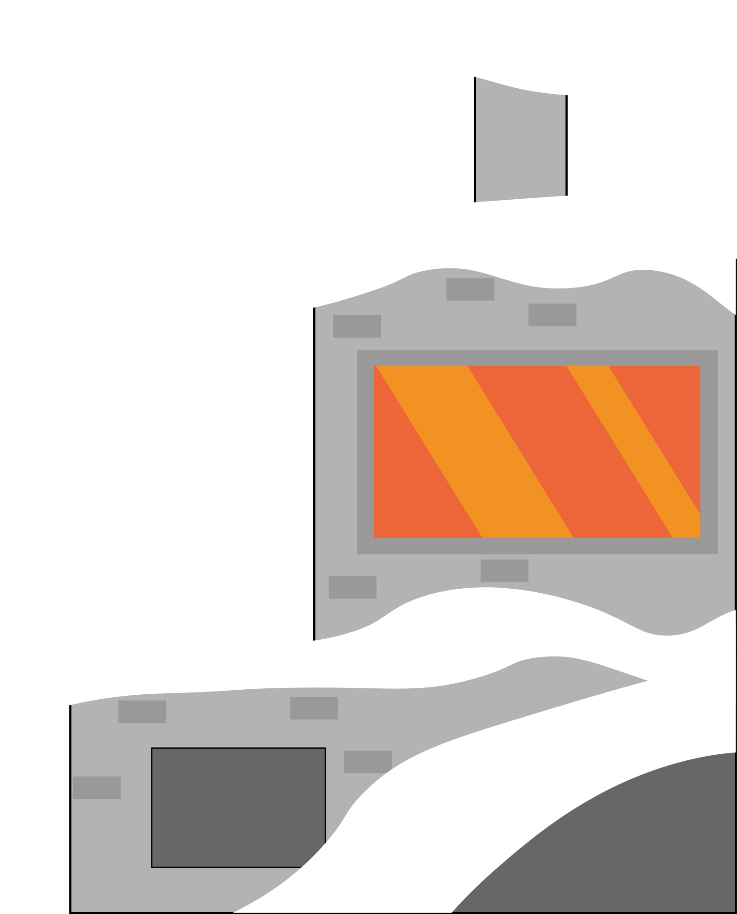

<!DOCTYPE html>
<html lang="de">
	<head>
		<meta charset="UTF-8">
		<title>Astharos Prototyp</title>
		<link rel="stylesheet" href="css/main.css">
		<link rel="stylesheet" href="css/nav.css">
		<link rel="stylesheet" href="css/start.css">
		<link rel="stylesheet" href="css/ttrpg.css">
		<link rel="stylesheet" href="css/welt.css">
		<link rel="stylesheet" href="css/karte.css">
		<link rel="stylesheet" href="css/tools.css">
		<link rel="stylesheet" href="css/downloads.css">
	</head>
	<body>
		<header>
		</header>
		<nav>
			<ul id="navbar">
				<li><a href="#startFrameHrefAnchor">Home</a></li>
				<li><a href="#ttrpgHrefAnchor">TTRPG</a></li>
				<li><a href="#weltHrefAnchor">Welt</a></li>
				<li><a href="#karteHrefAnchor">Karte</a></li>
				<li><a href="#toolsHrefAnchor">Tools</a></li>
				<li><a href="#downloadsHrefAnchor">Downloads</a></li>
			</ul>
		</nav>
		<main>
			<!-- Bereich: Startframe -->
			<section id="startframe" class="posRelative">
				<div id="startFrameHrefAnchor"></div>
				<div id="startframeDecoLeft">
					
				</div>
				<div id="middleSection">
					<div id="startframeLogo">
						
					</div>
				</div>
				<div id="startframeDecoRight">
					
				</div>
			</section>
			<!-- Bereich: TTRRPG -->
			<section id="ttrpg" class="posRelative">
				<div id="ttrpgHrefAnchor"></div>
				<div id="ttrpgNav">
					<h1>TTRPG</h1>
					<div>
						<div id="sprechblase">
							<p>Frag mich einfach wenn du Hilfe brauchst, Kräh!</p>
							
						</div>
					</div>
					<div id="ttrpgNavbar">
						<div class="questionBox">
							<object class="navbarQuestionsImg" data="assets/ttrpg/Intro TTRPG_Textbox_2.svg" type="image/svg+xml"></object>
							<p>Was ist ein TTRPG&#x202f;?</p>
						</div>
						<div class="questionBox">
							<object class="navbarQuestionsImg" data="assets/ttrpg/Intro TTRPG_Textbox_2.svg" type="image/svg+xml"></object>
							<p>Wie funktioniert ein TTRPG&#x202f;?</p>
						</div>
						<div class="questionBox">
							<object class="navbarQuestionsImg" data="assets/ttrpg/Intro TTRPG_Textbox_2.svg" type="image/svg+xml"></object>
							<p>Was brauche ich für ein TTRPG&#x202f;?</p>
						</div>
						<div class="questionBox">
							<object class="navbarQuestionsImg" data="assets/ttrpg/Intro TTRPG_Textbox_2.svg" type="image/svg+xml"></object>
							<p>Welche Aufgaben hat der Spielmeister&#x202f;?</p>
						</div>
					</div>
				</div>
				<div class="backgroundWood">
					<div id="wasIst" class="ttrpgUnterseite">
						<div class="anchor"></div>
						<h2>Was ist ein TTRPG&#x202f;?</h2>
						<p>
							Ein TTRPG ist ein fiktionales Rollenspiel, welches 
							mit Papier, Stiften und Würfeln gespielt wird. In 
							einem TTRPG ist einem Videospiel recht änhlich. 
							Wenn man in einem Videospiel eine Taste, ein 
							Knopf oder ähnliches drückt, entscheidet der 
							Algorithmus im Hintergrund was als nächstes 
							passiert. Die Spieler aktivieren durch ihre 
							Entscheidungen damit verschiedene Aktionen. 
							Die Aktion wird in den meisten Fällen durch 
							Sätze wie „Ich schlage zu…“ oder „Ich mache 
							ein Feuer…“. gestartet. Dadurch aktiviert sich 
							der Algorithmus, welcher im TTRPG Universum 
							durch den Spielleiter verkörpert wird. Alles was im 
							Hintergrund passiert, läuft über den Spielleiter. 
							Die Geschichte, Proben und Aktionen oder NPCs. 
							Ob eine Aktion bzw. Probe eines Spielers erfolgt 
							oder scheitert, entscheidet sich durch deren 
							Talente und das geworfene Würfelergebnis.
						</p>
						<object id="videoFrame" data="assets/ttrpg/Intro TTRPG_3.svg" type="image/svg+xml"></object>
						<object id="videoTTRPG" data="assets/backgroundAnimated.svg" type="image/svg+xml"></object>
					</div>
					<div id="wieFunktioniert" class="ttrpgUnterseite">
						<div class="anchor"></div>
						<h2>Wie funktioniert ein TTRPG&#x202f;?</h2>
						<p>
							Du willst wissen wie ein TTRPG funktioniert&#x202f;? 
							Durch das Zusammenarbeiten zwischen den 
							Spielern und dem Spielleiter können Aktionen 
							durchgeführt werden und die Geschichte 
							vorangebracht werden.
							Bsp.:
							„Ihr wandert durch einen verwachsenen Wald, 
							als ihr dann auf eine offene Lichtung trifft. Auf 
							der Lichtung stehen Kühe und Schafe und eine 
							kleinere Hütte. Was tut ihr&#x202f;?“
							Danach müssen die Spieler reagieren, indem 
							sie bestimmte Aktionen ihres Charakters 
							durchführen (Bsp.: zur Hütte laufen, umschauen, 
							Waffen ziehen oder sich verstecken). 
							Danach beschreibt der Spielleiter was sich 
							durch die Aktionen der Spieler verändert. 
							Dementsprechend gibt es einen ständigen Dialog 
							zwischen den Spielern und dem Spielleiter.
						</p>
					</div>
					<div id="wasBraucheIch" class="ttrpgUnterseite">
						<div class="anchor"></div>
						<h2>Was brauche ich für ein TTRPG&#x202f;?</h2>
						<div id="questionsFrame">
							<div id="questions">
								<p id="regelwerk">1. Ein Regelwerk</p>
								<p id="charakterboegen">2. Charakterbögen</p>
								<p id="wuerfel">3. Verschiedene Würfel</p>
								<p id="papier">4. Bleistift & Papier</p>
								<p id="sichtschutz">5. Sichtschutz für Spielleiter</p>
								<p id="geschichte">6. Eine Geschichte</p>
								<p id="leiter">7. Ein Spielleiter</p>
								<p id="multiplayer">8. Mindestens 2 Spieler</p>
							</div>
						</div>
						<div id="houseContainer">
							
							<div id="sprechblaseHouse">
								<p id="sprechblaseHousePara">Ich verrate dir was du alles für ein einfaches Abenteuer brauchst, Kräh!</p>
								
							</div>
							
						</div>
					</div>
					<div id="welcheAufgabe" class="ttrpgUnterseite">
						<div class="anchor"></div>
						<h2>Welche Aufgaben hat der Spielmeister&#x202f;?</h2>
						<p>
							Wie ich die Augen und Ohren für euch bin, so ist 
							der Spielleiter das und alle weiteren Sinne für die 
							Spieler. Er führt sie nicht nur durch die Geschichte, 
							sondern sorgt dafür das die gewünschten 
							Aktionen der Spieler ausgeführt werden. Neben 
							der Geschichte kennt der Spielleiter auch die 
							Rahmenhandlung, sowie wichtige Aktionen und 
							Hintergründe der Spielwelt. 26
							Da die Spieler immer unterschiedlich 
							reagieren, sowie auch ab und zu von der 
							Geschichte abweichen, ist eine gewisse 
							Improvisationsfähigkeit von Vorteil. Das hilft dem 
							schnellen Weiterführen der Geschichte und gibt 
							den Spielern die Möglichkeit sich besser in die 
							Welt einzufühlen. Klingt kompliziert oder&#x202f;?
							Der Spielleiter verkörpert alle Charaktere, welche 
							nicht von Spielern gespielt werden. Er spricht 
							für sie, kontrolliert sie in einem Kampf und gibt 
							ihnen das kreative Etwas, um sie von der Masse 
							abzuheben. Der hat ja ziemlich viel zu tun…
						</p>
					</div>
				</div>
			</section>
			<!-- Bereich: Welt -->
			<section id="welt" class="posRelative">
				<div id="weltHrefAnchor"></div>
				<div id="weltStart" class="sectionStart">
					<h1>Die Welt von Astharos</h1>
					
					<!--<video id="animationsfilmWelt" src="assets/introWelt/Animation_End.mp4" controls></video>-->
				</div>
				<div class="backgroundWood threeHigh">
				<div id="weltEinstieg">
					<div id="abenteuerEinstieg">
						<h3>Dann wollen wir mal in das Abenteuer einsteigen</h3>
						<div id="firstRedBox" class="redFrame">
							<div class="yellowFrame">
								<p class="yellowBoxPara">
									Astharos ist ein Fantasy TTRPG Abenteuer, 
									welches eigens entwickelt wurde. Dabei wurden 
									verschiedene Welten und Geschichten als 
									Inspiration genutzt um eine umfangreiche und 
									interessante Welt zu erschaffen.<br>
									Der Kontinent Astharos gilt als der reichste 
									Kontinent der bekannten Welt. Fruchtbares 
									Land, erzreiche Gebirge und eine Vielzahl an 
									Lebewesen zieren die Welt von Astharos. Hier 
									leben viele verschiedene Rassen, darunter 
									Menschen, Orgrosh, die Orks, Arondal, die Elben, 
									Helban, die Halblinge, Taragdul, die Zwerge, 
									Felica, die Katzenmenschen und die Pessmos, 
									Mischwesen aus Tier und Mensch, sowie anderen 
									Wesen.
									Astharos ist aufgeteilt in mehrere Fürstentümer 
									wie Caelndil, Terrascall, Mithrand, Seedeheim, 
									Auurus – Erandal, Bühlenbrügge und der Insel 
									Ihlfheim.
								</p>
							</div>
						</div>
					</div>
				</div>
				<div id="weltBook">
					<div id="weltbookFrame">
						<div id="vl1"></div>
						<div id="vl2"></div>
						<svg class="bookPathSvg">
							<path class="bookPath" d="M 0 0 C 500 -1 500 30 580 0 C 660 30 660 -1 1160 0" />
						</svg>
						<div class="leftBookSide">
							<div id="indexLeft">
								<h2>Index</h2>
								<div class="BookPoints">
									<p id="indexRassen">1. Rassen</p>
									<p id="indexReligion">2. Religion</p>
									<p id="indexMagie">3. Elementarmagie</p>
								</div>
							</div>
							<div id="rassenLeft">
								<h2>Rassen</h2>
								<div class="BookPoints">
									<p id="orks">1. Orgrosh – Orks</p>
									<p id="elben">2. Arondal – Elben</p>
									<p id="halbElben">3. Halb-Elben</p>
									<p id="halbling">4. Helban – Halbling</p>
									<p id="zwerge">5. Taragdul – Zwerge</p>
									<p id="katzenmenschen">6. Felica – Katzenmenschen</p>
									<p id="mischwesen">7. Pessmos – Mischwesen</p>
								</div>
							</div>
							<div id="religionLeft">
								<h2>Religion</h2>
								<div class="BookPoints">
									<p id="thyros">1. Thyros - Gott des Himmels</p>
									<p id="aris">2. Aris – Göttin der Jagd</p>
									<p id="begrend">3. Begrend – Gott des Weines und der Völlerei</p>
									<p id="arphen">4. Arphen – Gott der Landwirtschaft und Tiere</p>
									<p id="trendir">5. Trendir – Gott des Handwerks</p>
									<p id="gilith">6. Gilith – Göttin der Musik und Kunst</p>
									<p id="trados">7. Trados – Gott des Handels und Reichtum</p>
									<p id="koshka">8. Koshka – Gott der Magie und des Wissens</p>
									<p id="seonora">9. Seonora – Göttin der Liebe und Zuneigung</p>
									<p id="ferrumtis">10. Ferrumtis – Gott des Eisens und Silber</p>
									<p id="fanuin">11. Fanuin – Gott des Lichts</p>
									<p id="varrakis">12. Varrakis – Gott des Kampfes und Krieges</p>
									<p id="dandulein">13. Dandulein – Gott des Glücks</p>
								</div>
							</div>
							<div id="elementarmagieLeft">
								<h2>Magie</h2>
								<div class="BookPoints">
									<p id="element">1. Elementarmagie</p>
									<p id="natur">2. Naturmagie</p>
									<p id="schutz">3. Schutz & Verstärkungsmagie</p>
									<p id="beschwoer">4. Beschwörungsmagie</p>
									<p id="illusion">5. Illusionsmagie</p>
									<p id="wiederher">6. Wiederherstellungsmagie</p>
									<p id="bannmagie">7. Bannmagie & Flüche</p>
									<p id="fortbewegung">8. Fortbewegungsmagie</p>
									<p id="wissens">9. Erkenntnismagie</p>
									<p id="veraenderung">10. Veränderungsmagie</p>
									<p id="dunkle">11. Dunkle Magie</p>
								</div>
							</div>
						</div>
						<div class="rightBookSide">
							<div id="rightBookSideIconsBox">
								
								
								
								
							</div>
              <!-- Beginn right side Rassen -->
							<div id="rassenLeft">
								<div id="orksRight" class="rightSideBox">
									<h2>Orgrosh – Orks</h2>
									<p>
										Die Orgrosh sind eine der furchteinflößenden 
										Völker von Astharos. Viele von ihnen sind getrieben 
										von Hass und werden dementsprechend von 
										den anderen Völkern behandelt. Sie werden 
										meist als Abscheulichkeiten betrachtet und 
										deswegen in den meisten Fällen gemieden. Sie 
										müssen sich also, um zu überleben, den Respekt 
										verdienen von den anderen Rassen nicht gejagt 
										zu werden. Aufgrund der Geschehnisse in den 
										Kämpfen zwischen der Vereinigten Völker und 
										der Schwarzen Klinge, werden Orks eher mit 
										verachtenden Blicken beäugt, da Orgrosh einen 
										großen Teil der Armee der Schwarzen Klinge 
										ausmachten.
									</p>
								</div>
								<div id="elbenRight" class="rightSideBox">
									<h2>Arondal – Elben</h2>
									<p>
										Eines der edelsten Geschöpfe in dieser Welt 
										sind die Arondal. Sie haben ein langes Leben 
										und Besitzen ihren Ursprung in der Natur. Ihnen 
										sind Traditionen sehr wichtig und finden mit 
										anderen Völkern eher weniger gut Anklang. 
										Nichtsdestotrotz können sie auch Bindungen 
										zu anderen Völkern herstellen, wenn aber auch 
										schwer. Existiert erstmal so eine Bindung, kann 
										das Band zwischen den Wesen nur schwer 
										getrennt werden. Elben sind somit äußerst soziale 
										und loyale Wesen. Die Natur ist Elben besonders 
										wichtig und haben deshalb auch eine besondere 
										Bindung zur deren.
									</p>
								</div>
								<div id="halbElbenRight" class="rightSideBox">
									<h2>Halb-Elben</h2>
									<p>
										Halb-Elben sind das Ergebnis zwischen Menschen 
										und Elben. Der Grund wieso die Menschen von 
										Elben so angezogen fühlen ist die Eigenschaft 
										der unergründlichen Schönheit. Auch die Elben 
										sind wiederum von den Menschen fasziniert, da 
										sie deren ungestüme und impulsive Art ziemlich 
										erfrischend finden. In manchen Fällen führt 
										diese gegenseitige Faszination dann auch zu 
										tiefgründigen Beziehungen, die jedoch nicht 
										selten rein auf körperlicher Anziehungskraft 
										beruhen und dementsprechend kurz sind. 
									</p>
								</div>
								<div id="halblingRight" class="rightSideBox">
									<h2>Helban – Halbling</h2>
									<p>
										Das von Natur aus friedlichste Volk sind die 
										Helban. Sie haben eine eher optimistische und 
										gutmütige Art und besitzen ein fast schon 
										unheimliches Glück. Sie besitzen einen starken 
										Drang zum Wandern, weshalb schon viele Helban 
										in manch Abenteuer geraten sind. Auch wenn 
										sie keine sonderliche Größe besitzen, sind sie 
										sehr mutig und neugierig. Sie besitzen ein eher 
										ausgeglichenes Gemüt und neigen weniger zu 
										Gewalt und Wutausbrüchen als andere Völker. 
									</p>
								</div>
								<div id="zwergeRight" class="rightSideBox">
									<h2>Taragdul – Zwerge</h2>
									<p>
										In der Welt von Astharos gelten die Taragdul als 
										ein merkwürdiges Volk. Sie gelten als ein gierig 
										und stoisches Volk, weshalb sie sich auch viele 
										in die Berge zurückgezogen haben. Durch ihren 
										Rückzug haben sie geneigt anderen Völkern eher 
										misstrauisch zu begegnen. Zwerge sind äußerst 
										mürrische und humorlose Bergarbeiter, was 
										vielleicht durch ihre Geschichte sich entwickelt 
										hat. 
									</p>
								</div>
								<div id="katzenmenschenRight" class="rightSideBox">
									<h2>Felica – Katzenmenschen</h2>
									<p>
										Die Felica sind das wohl sonderbarste Volk der 
										Welt. Sie stammen von einem anderen Teil der 
										Welt, haben sich aber schon vor Jahrhunderten 
										in dieser Welt verbreitet. Sie gelten als äußerst 
										schnell und leichtfüßig, weswegen viele von 
										ihnen als Diebe tätig sind. Sie sind aber auch gute 
										Händler, die meisten von ihnen als „Fahrende 
										Händler“ bekannt. Ob die Ware, welche sie 
										verkaufen, auch immer legal ist weiß man nie so 
										wirklich. 
									</p>
								</div>
								<div id="mischwesenRight" class="rightSideBox">
									<h2>Pessmos – Mischwesen</h2>
									<p>
										Die Pessmos sind Mischwesen aus Tier und 
										Mensch. Mal Mensch und Fisch, Mensch und 
										Kuh und vieles weiteres. Ihren Ursprung haben 
										sie durch den Krieg zwischen den Vereinigten 
										Völkern und der Schwarzen Klinge, wo Dunkle und 
										Helle Magie aufeinander prallten und einen Riss 
										in der Realität bildeten. Durch die Vermischung 
										der beiden Magie-Kräften verwandelten sich 
										viele Astharaner mit Lebewesen, welche in 
										der Nähe der Schlachtfelder waren. Aufgrund 
										ihres Ursprungs und deren Aussehen, werden 
										sie nicht einmal als Volk, sondern eher als eine 
										einfache Abscheulichkeit bzw. mindere Wesen 
										angesehen.
									</p>
								</div>
							</div>
              <!-- Ende right side Rassen -->
              <!-- Beginn right side Religion -->
							<div id="religionLeft">
								<div id="thyrosRight" class="rightSideBox">
									<h2>Thyros - Gott des Himmels</h2>
									<p>
										Thyros gilt in dieser Welt als Gottvater aller 
										bekannten und heiligen Götter, der Welt, 
										Lebewesen, Pflanzen und der Zeit. Seine Kinder 
										bekamen von ihm Aufgaben und Pflichten, um 
										die Menschen und alle anderen Rassen in ihren 
										Taten zu schützen und helfen. Thyros erschuf 
										seine Kinder und die Menschen nach seinem 
										Abbild, doch in welcher Gestalt man ihnen 
										begegnet entscheiden die Götter selbst. 
										Alle anderen Götter werden nicht von Thyros und 
										seinen Anhängern akzeptiert und gelten als eine 
										andere Glaubensrichtung.
									</p>
								</div>
								<div id="arisRight" class="rightSideBox">
									<h2>Aris – Göttin der Jagd</h2>
									<p>
										Aris, Göttin der Jagd schützt all diejenigen, 
										welche sich als Jäger von Tieren und Kreaturen 
										behaupten. Sowohl Menschen als auch Elfen, Orks 
										und Pessmos glauben an Aris. Ihre Gläubigen 
										feiern einmal im Jahr, am 34. des Zyklus Kantos, 
										das Fest des J´egris, auch Fest der Jagd genannt. 
										Überall in der Welt gibt es kleine Schreine, um 
										Aris zu huldigen und dessen Anwesenheit zu 
										stärken.
									</p>
								</div>
								<div id="begrendRight" class="rightSideBox">
									<h2>Begrend – Gott des Weines und der Völlerei</h2>
									<p>
										Begrend, der Gott des Weines und der Völlerei 
										ist zuständig für allerlei Festivitäten, Weine und 
										Völlereien in der Welt von Astharos. Er wird vor 
										jedem Getränk gepriesen und an ihn glauben 
										so gut wie alle Rassen. Am 66. Des Zyklus Sithos, 
										feiern sie das Fest von Begros, dem Fest der 
										Völlerei. Begrend erschuf für Astharos Trauben 
										und Früchte, sodass man aus ihnen die leckersten 
										Weine und Schnäpse herstellen kann.
									</p>
								</div>
								<div id="arphenRight" class="rightSideBox">
									<h2>Arphen – Gott der Landwirtschaft und Tiere</h2>
									<p>
										Die Landwirtschaft, Felder und Landwirte werden 
										vom Gott der Landwirtschaft Arphen bewacht. 
										Halblinge, Elfen, Menschen und Pessmos sind 
										Anhänger dieses Glaubens und preisen ihre 
										Felder, Früchte und Güter in seinem Namen. 
										Im Zyklus Hestos, am 74. Feiern sie des Fests 
										von Mulu, welches auch als Fest von Weizen 
										und Brot bekannt ist. Für ein erfolgreiches und 
										ertragreiches Jahr opfern Landwirte und Bauern 
										ein Tier in seinem Namen und hoffen, dass das 
										Opfer ihnen Glück und Erfolg auf ihren Feldern 
										bringt.
									</p>
								</div>
								<div id="trendirRight" class="rightSideBox">
									<h2>Trendir – Gott des Handwerks</h2>
									<p>
										Handwerker, Gebäude und allerlei von Hand 
										geschaffene Dinge, vereinen sich unter Trendir, 
										dem Gott des Handwerks. Menschen, Elfen, 
										Zwerge und Pessmos preisen ihn vor jeder Tat, 
										in welcher sie etwas erbauen und erschaffen. 
										Beim Fest des Hedrosh, dem Fest von Hammer 
										und Amboss, huldigen sie am 52. des Zyklus um 
										seinem Segen.
									</p>
								</div>
								<div id="gilithRight" class="rightSideBox">
									<h2>Gilith – Göttin der Musik und Kunst</h2>
									<p>
										Musik, die Dichtkunst und allerlei künstlerisches 
										Tun wurde von der Göttin Gilith für Astharos 
										erschaffen. Barden, Akrobaten und andere 
										Künstler, vorwiegend Menschen oder Halblingen, 
										beten sie an. Laut Legenden ist die Stimme Giliths, 
										das schönste was ein Wesen hören könnte und 
										sogar die härtesten Kämpfer und Kämpferinnen 
										zum Tanzen bewegen.
									</p>
								</div>
								<div id="tradosRight" class="rightSideBox">
									<h2>Trados – Gott des Handels und Reichtum</h2>
									<p>
										Münzen, Stoffe, Lebensmittel oder andere 
										Güter sind das tägliche Brot von Händler und 
										Karawanen. Auf ihren Reisen durch die Länder 
										und beim Handeln mit anderen, beten sie an 
										Trados für einen erfolgreichen Handelsabschluss 
										und dem sicheren Reisen durch die Lande. 
										Menschen und Felicia huldigen Trados bei jeder 
										gewonnen Münze und feiern ihn beim Fest der 
										Handlesbringende Münze, dem Tonrak Fest.
										Shathûr – Göttin der Stille
										Die Stille ist die Waffe der Diebe und Assassinen. 
										Die Anhänger von Shathûr behaupten, dass ihre 
										Opfer vor dem Sterben nur noch Stille hören 
										und innerlich wissen das ihr Leben verwirkt ist. 
										Jede, der ein Leben in der Dunkelheit führt, wird 
										durch den Mantel von Shathûr in seinen Taten 
										geschützt.
									</p>
								</div>
								<div id="koshkaRight" class="rightSideBox">
									<h2>Koshka – Gott der Magie und des Wissens</h2>
									<p>
										Laut den Gläubigen von Koshka, sei er der 
										Weiseste unter den Göttern. Alle Magie und das 
										unendliche Wissen zu entdecken und verstehen 
										ist das hehrste Ziel von Koshka. Thoronath, das 
										Fest der ewigen Magie, ist eine Versammlung 
										aller Magier und Gelehrte dieser Welt, bei dem 
										sie alles entdeckte Wissen in der ewigen heiligen 
										Thoronath-Bibliothek lagern und versammeln. 
										Die Thoronath-Bibliothek kann nur von denen 
										gefunden werden, welche das Leben eines 
									</p>
								</div>
								<div id="seonoraRight" class="rightSideBox">
									<h2>Seonora – Göttin der Liebe und Zuneigung</h2>
									<p>
										Seonora, die Göttin der Liebe und Zuneigung, 
										wird bei Hochzeiten angepriesen und segnet 
										die Zukunft der Liebenden. Seonora selbst war 
										einst verliebt, doch ihr Geliebter Herbanas wurde 
										durch einen fallenden Stern getötet, wodurch sie 
										entschieden hat, dass alle wahrlich Liebenden 
										durch sie geschützt werden.
									</p>
								</div>
								<div id="ferrumtisRight" class="rightSideBox">
									<h2>Ferrumtis – Gott des Eisens und Silber</h2>
									<p>
										Eisen, Silber, Spitzhacke und das sichere Arbeiten 
										in der Tiefe werden durch Ferrumtis gesegnet. 
										Vor jedem Tiefgang unter die Erde beten die 
										Zwerge an ihn und feiern seine Anwesenheit 
										und Schutz durch das Fest des Kibil, das Fest des 
										Silbers und der Tiefe.
									</p>
								</div>
								<div id="fanuinRight" class="rightSideBox">
									<h2>Fanuin – Gott des Lichts</h2>
									<p>
										Fanuin, der Gott des Lichtes, ist der heiligste 
										und höchste Gott der Elben. Für ihn ist er der 
										Erschaffer des Mondes und der Nacht. Er schützt 
										und segnet sie bei all ihrer Taten, ist verantwortlich 
										für ihr langes Leben und ihre körperlichen 
										Überlegenheit. Sie preisen ihn in ihren erbauten 
										Wald-Schreinen und am 31. Wrestos am Fest des 
										Ithildim, dem Fest des Mondsternlichts. Seinen 
										Schutz und Anwesenheit sind ihnen heiliger als 
										alles andere und reagieren sehr erzürnt falls man 
										schlecht über ihn redet.
									</p>
								</div>
								<div id="varrakisRight" class="rightSideBox">
									<h2>Varrakis – Gott des Kampfes und Krieges</h2>
									<p>
										Blut, Krieg und Kampf sind die Hauptaspekte im 
										Leben eines Orks und dessen Gottheit Varrakis. 
										Laut Sagen und Legenden erschuf Varrakis die 
										Orks aus dessen Blut und Gedärmen und formte 
										sie nach seinem Abbild. Orks huldigen ihm bei 
										jedem Kampf und feiern in seinem Namen bei 
										Siegen und Erfolgen.
									</p>
								</div>
								<div id="danduleinRight" class="rightSideBox">
									<h2>Dandulein – Gott des Glücks</h2>
									<p>
										Glück ist den kleinen Hold. Halblinge und Glück 
										werden immer wieder in Verbindung gebracht. 
										Nicht nur Gold und Taler, sondern auch das 
										Führen eins glücklichen Lebens, liegt in der Hand 
										von Dandulein. Beim Fest von Koshka, dem Fest 
										des Glückbringenden Hufeisens, feiern sie seinen 
										Präsenz.
										Gelehrten in Wissen und Weisheit führen.
									</p>
								</div>
							</div>
              <!-- Ende right side Religion -->
              <!-- Beginn right side Magie -->
							<div id="magieRight">
								<div id="elementRight" class="rightSideBox">
									<h2>Elementarmagie</h2>
									
									<p class="iconMarginMagie">
										Eine der einfachsten Magiearten ist das 
										Beherrschen der Elemente. Dazu gehört das 
										Beherrschen von Feuer, Wasser, Luft und Erde. 
										Anders als andere Zauber, ist das Erlernen eines 
										neuen Elements äußerst schwierig und wird nur 
										von wenigen erreicht. Wenn die Zauber stärker 
										sein sollen, muss man sich in der Nähe des 
										zugehörigen Elementes befinden. So können 
										beispielsweise manche Zauber nicht einfach so 
										gewirkt werden.
									</p>
								</div>
								<div id="naturRight" class="rightSideBox">
									<h2>Natur<wbr>magie</h2>
									
									<p class="iconMarginMagie">
										Die Naturmagie umschreibt alle Zauber und 
										Rituale, welche die Natur beeinflussen. Darunter 
										fallen allerlei Pflanzen und Tiere, Gifte und 
										Extrakte und dem Verändern von Holz.
									</p>
								</div>
								<div id="schutzRight" class="rightSideBox">
									<h2>Schutz- & Verstärkungs<wbr>magie</h2>
									
									<p class="iconMarginMagie">
										Schutz vor Magieangriffen oder normalen 
										Angrffen und das Verstärken des Körpers bilden 
										den Hauptteil des dieser Magie-Art.
									</p>
								</div>
								<div id="beschwoerRight" class="rightSideBox">
									<h2>Beschwörungs<wbr>magie</h2>
									
									<p class="iconMarginMagie">
										Zu der Beschwörungsmagie gehören das 
										Beschwören von allerlei Geisterwesen, Untoten, 
										Tierewesen, Feen oder sogar Waffen.
									</p>
								</div>
								<div id="illusionRight" class="rightSideBox">
									<h2>Illusions<wbr>magie</h2>
									
									<p class="iconMarginMagie">
										Illusionen, Unsichtbarkeit, Beeinflussen von 
										geistigen Prozessen oder Geräusche vermindern 
										sind Bestandteil der Illusionsmagie. Nicht jeder 
										kann und will diese Art von Magie verstehen 
										und erklärt sich manchmal sogar als Göttliche 
										Fügung.
									</p>
								</div>
								<div id="wiederherRight" class="rightSideBox">
									<h2>Wieder<wbr>herstellungs<wbr>magie</h2>
									
								  <p class="iconMarginMagie">
										Eine Vielzahl an Heilzaubern und 
										Heilungen gehören zu dem Repertoire der 
										Wiederherstellungsmagie.
										Wie die Elementarmagie, ist auch diese Art der 
										Magie leicht zu erlernen. 
									</p>
								</div>
								<div id="bannmagieRight" class="rightSideBox">
									<h2>Bannmagie und Flüche</h2>
									
									<p class="iconMarginMagie">
										Das Werfen, Brechen und Annullieren von 
										Flüchen, Bannkreisen und anderen Zauber sind 
										Teil der Bann- und Fluchmagie.
									</p>
								</div>
								<div id="fortbewegungRight" class="rightSideBox">
									<h2>Fort<wbr>bewegungs<wbr>magie</h2>
									
									<p class="iconMarginMagie">
										Mit diesen Zaubersprüchen kann die Bewegung 
										von jeglichen Lebewesen erhöht werden. 
										Ebenfalls können die Ausdauer und Sprungkraft 
										erhöht werden.
									</p>
								</div>
								<div id="wissensRight" class="rightSideBox">
									<h2>Erkenntnis<wbr>magie</h2>
									
									<p class="iconMarginMagie">
										Rätsel und Unerklärliches sind Teil der 
										Erkenntnismagie. Mit dieser Art der Magie 
										lassen sich Magische Sprachen und Runen 
										entschlüsseln, Inschriften lesen und Telepathie 
										nutzen. 
									</p>
								</div>
								<div id="veraenderungRight" class="rightSideBox">
									<h2>Veränderungs<wbr>magie</h2>
									
									<p class="iconMarginMagie">
									</p>
								</div>
								<div id="dunkleRight" class="rightSideBox">
									<h2>Dunkle Magie</h2>
									
									<p class="iconMarginMagie">
										Dunkle Magie gehört in Astharos und den 
										anderen Kontinenten zu dem verbotenen Zauber. 
										Jegliche Zauber werden gesetzlich geahndet, 
										weswegen die meisten Zauberer davon ablassen 
										oder ein Leben in Dunkelheit führen.
									</p>
								</div>
							</div>
              <!-- Ende right side Magie -->
						</div>
					</div>
					<div id="weltHochTief">
						<div id="hoehenUndTiefen">
							<h3>Die Höhen und Tiefen Astahros</h3>
							<div id="secondRedBox" class="redFrame">
								<div class="yellowFrame">
									<p class="yellowBoxPara">
										Die Höhen und Tiefen Astharos – Teil 1, soll der 
										Einstieg in die Welt von Astharos sein und 
										diejenigen Nutzer ansprechen, welche nicht 
										viel Erfahrung mit Pen & Paper besitzen. Egal 
										ob Spieler oder Spielmeister, die Erklärungen 
										und die Komplexität sind sehr einfach gehalten, 
										sodass ein simpler Einstieg für jeden möglich ist. 
										Es werden in diesem viele Freiheiten eingeräumt 
										um das erste Abenteuer leicht zu gestalten.
										<br>
										Im ersten Teil von „Die Höhen und Tiefen Astharos“ 
										treffen sich, die bis dato noch unbekannten 
										,Charaktere (Spieler) in einer Taverne und 
										werden Zeuge eines skrupellosen Verbrechens. 
										Entscheiden sich die Spieler, diesem Verbrechen 
										und dem Hintergrund dahinter nachzugehen, 
										erwartet sie ein eindrucksvolles Abenteuer in der 
										Welt von Ashtaros. Es führt sie über das Hochland-Gebiet von Mithrand bis über und unter die 
										Berge des Terrascall-Gebirges. Dabei begegnen 
										sie allerlei Personen und Wesen und kommen 
										an verschiedenen Orten vorbei. Wie genau sie 
										die Welt entdecken, wird dem Spielmeister und 
										dessen Fantasie und den Spielern und deren 
										Handlungen überlassen.
									</p>
								</div>
							</div>
						</div>
						<div id="weltHochTiefCrowBox">
							<div id="weltHochTiefTextContainer">
								
								<p id="weltHochTiefText">
									Klicke hier, um das Abenteuer herunterzuladen, Kräh!
								</p>
								
								<button id="weltDownloadBtn">Download PDF</button>
							</div>							
						</div>
					</div>
				</div>
			</section>
			<!-- Bereich: Karte -->
			<section id="karte" class="posRelative">
				<div id="karteHrefAnchor"></div>
				<div class="sectionStart">
					<h1>Karte</h1>
				</div>
				<div id="kartenDiv">
					<div class="anchor"></div>
					<div id="karteBild">
						<div id="mapContainer">
							
							<div id="icons">
								<div id="iconAsthos" class="kartenIcons grow" >
									
								</div>
								<div id="iconFlostapor" class="kartenIcons">
									
								</div>
								<div id="iconGlarius" class="kartenIcons">
									
								</div>
								<div id="iconHerbanas" class="kartenIcons">
									
								</div>
								<div id="iconMiratan" class="kartenIcons">
									
								</div>
								<div id="iconNuberios" class="kartenIcons">
									
								</div>
								<div  id="iconThondbaren" class="kartenIcons">
									
								</div>
							</div>
						</div>						
					</div>					

					<div>
						<div id="stadtAsthos" class="stadtDiv">
							<div class="anchor"></div>
							
							<div class="redFrame stadtTextBox">
								<div class="yellowFrame">
									<h2>Asthos</h2>
									<p class="stadtText">
										Asthos und seine weiten Umlande gelten als der 
										wichtigste Sammel-, Handel- und Treffpunkt in 
										Astharos. In ihr steht der Bergfried Wolkhain, 
										benannt nach seinem Erbauer und ersten König 
										Drendon. Der derzeitige Herrscher von Astharos 
										und dessen Hauptstadt, ist der Truchsess 
										Tabron, welcher das Land mit eisenharter Hand 
										führt. Die ganze Stadt und der Bergfried selbst 
										sind umrandet von einer hohen Mauer und 
										mächtigen Befestigungsanlagen, welches sie 
										vor Gefahren aus dem Umland schützt. In Asthos 
										gibt es vielerlei Schenken, die Glaubenskirche 
										von Thyros, Handwerksbetriebe, Bordelle und 
										viele andere Gebäude, welche für das Wohl der 
										Bürger sorgen. Hier versammeln sich allerlei 
										Rassen und versuchen in Frieden und Einigkeit 
										zu leben. Die einzige Rasse, welche sich in 
										Asthos kaum aufhält, sind die Orgrosh, da sie 
										Aufgrund der Geschehnisse der Vergangenheit 
										mit verachteter Blicke beäugt werden.
									</p>
								</div>
							</div>
							<button class="backToMap">Zurück zur Karte</button>
							
						</div>

						<div id="stadtFlostapor" class="stadtDiv">
							<div class="anchor"></div>
							
							<div class="redFrame stadtTextBox">
								<div class="yellowFrame">
									<h2>Flostapor</h2>
									<p class="stadtText">
										Die goldene Stadt Flostapor, welche in der Mitter 
										der Insel Ilfheim steht, ist bekannt für ihre Weine, 
										Schnäpse und Freudenhäuser. Der Adel und 
										Hohe Klerus nutzt bereitwillig die Güter der Insel 
										und dessen freude bringenden Gesellschaften. 
										Ebenfalls sind die Stadt und Insel als Urlaubsund Heimatort der hohen Gesellschaft berühmt. 
										Die Stadt selbst wurde aus dem feinsten reinsten 
										Marmor, edlen Hölzern und verziertem Stein 
										erbaut, welche in der Abendsonne in allen Farben 
										erstrahlt. Aufgrund der Vielzahl an Festen und 
										Feiern ist selten Stille in Flostapor und an jeder 
										Ecke etwas zu finden.
									</p>
								</div>
							</div>
							<button class="backToMap">Zurück zur Karte</button>
							
						</div>

						<div id="stadtGlarius" class="stadtDiv">
							<div class="anchor"></div>
							
							<div class="redFrame stadtTextBox">
								<div class="yellowFrame">
									<h2>Glarius</h2>
									<p class="stadtText">
										Die See- und Handelsstadt Glarius, liegt 
										inmitten des Sees Weitengraas. Die primären 
										Handelsgüter der Stadt kommen aus der 
										Fischerei und anderen Gütern, welche für die 
										Schifffahrt gebraucht werden. Erbaut wurde 
										die Stadt auf riesigen Pfählen, erschaffen aus 
										den in Seedeheim zu findenden Pirubäumen. 
										Auf diesen Pfählen entstand mit der Zeit eine 
										riesige Stadt aus Holz und Stein. Ähnlich zu einer 
										normalen Stadt gibt es auch hier verschiedene 
										Gebäude und Gildenhäuser.
									</p>
								</div>
							</div>
							<button class="backToMap">Zurück zur Karte</button>
							
						</div>

						<div id="stadtHerbanas" class="stadtDiv">
							<div class="anchor"></div>
							
							<div class="redFrame stadtTextBox">
								<div class="yellowFrame">
									<h2>Herbanas</h2>
									<p class="stadtText">
										Im Westen Mithrand liegt die Hauptstadt 
										Herbanas, welche auch als Stadt der Kunst und 
										des Gesangs bekannt ist. Inmitten der Stadt 
										liegt die Bardenakademie Götteburg. Die hier 
										gelernten Barden gelten als die besten Künstler 
										Astharos. Die Stadt selbst steht am Ufer des 
										Wolkensee´s Seonora. Laut Legenden wurde 
										der See nach Thyros Tochter Seonora benannt, 
										welche den See mit ihren Tränen füllte als ihr 
										Geliebter Herbanas am Rande einer tiefen Kluft 
										starb, die durch einen fallenden Stern geschaffen 
										wurde. Aufgrund dieser Legende wurde die Stadt 
										um die Grabstelle von Herbanas erbaut, sodass 
										Seonora und Herbanas in ewiger Zeit zusammen 
										sein können.
									</p>
								</div>
							</div>
							<button class="backToMap">Zurück zur Karte</button>
							
						</div>

						<div id="stadtMiratan" class="stadtDiv">
							<div class="anchor"></div>
							
							<div class="redFrame stadtTextBox">
								<div class="yellowFrame">
									<h2>Miratan</h2>
									<p class="stadtText">
										Miratan, die Stadt in den Bergen gilt als 
										unglaublichste Bauwerk dieser Welt. Häuser und 
										Gebäude wurden am Fuße des Berges, sowie 
										in dessen Hängen geschlagen, und thronen 
										über der Quelle Miratans. Die Stadt wurde vor 
										tausenden von Jahren von Zwergen erbaut und 
										schützten bis heute das Leben aller Lebewesen in 
										der Stadt. Die Gebäude und Straßen schlängeln 
										sich sowohl durch, als auch am Berg entlang 
										und sind über riesige Brücken miteinander 
										verbunden. Geschaffen wurde die Stadt durch 
										den härtesten Stein Terras, welcher überall in 
										Terrascall zu finden ist. Die Gebäude und Brücken 
										sind verziert durch Zwergen Metalle, Stahl und 
										Silber und schimmern in der aufgehenden 
										Sonne.
									</p>
								</div>
							</div>
							<button class="backToMap">Zurück zur Karte</button>
							
						</div>

						<div id="stadtNuberios" class="stadtDiv">
							<div class="anchor"></div>
							
							<div class="redFrame stadtTextBox">
								<div class="yellowFrame">
									<h2>Nuberios</h2>
									<p class="stadtText">
										Wenn das Schlagen von Hammer auf Amboss 
										zu hören ist, dann ist Nuberios nicht mehr weit 
										entfernt ist. Die Baumeistergilde “Hammer und 
										Eisen” ist der Grund für den Trubel und Reichtum 
										der Stadt. Jeder, der sich als Handwerker beweisen 
										will, reist nach Nuberios und will von den Besten 
										lernen. Minerale und Erze bezieht die Stadt aus 
										deren eigener Miene, welche in den Berg Erios 
										geschlagen wurde.
									</p>
								</div>
							</div>
							<button class="backToMap">Zurück zur Karte</button>
							
						</div>

						<div id="stadtThondbaran" class="stadtDiv">
							<div class="anchor"></div>
							
							<div class="redFrame stadtTextBox">
								<div class="yellowFrame">
									<h2>Thondbaran</h2>
									<p class="stadtText">
										Môr-eryn, der Dunkle Wald, umrandet Thonbaran, 
										die Stadt der Elben. Inmitten des Waldes wurde 
										eine Stadt aus Stein und Bäumen geschlagen, 
										welche eines Elben würdig ist. Edle Gebäude 
										und Brücken aus den härtesten Baumstämmen 
										des Giliat-Baums bilden ein riesiges Labyrinth, in 
										denen sich nur ein Elb zurechtfinden kann. Am 
										höchsten Punkt der Stadt steht der Thron des 
										Elbenherrn Dírion, der seine Stadt von oben herab 
										mit weiser und gerechter Hand führt. Aufgrund 
										der im Wald geschaffenen Stadt, werden dessen 
										Bewohner auch oft als Wald-Elben bezeichnet.
									</p>
								</div>
							</div>
							<button class="backToMap">Zurück zur Karte</button>
							
						</div>
					</div>
				</div>
			</section>
			<!-- Bereich: Tools -->
			<section id="tools" class="posRelative">
				<div id="toolsHrefAnchor"></div>
				<div class="sectionStart">
					<h1>Tools</h1>
					<div>
						<div id="toolsSpeechOne">
							<p>
								Falls du Hilfe brauchst und ein immersiven 
								Charakter bauen willst, dann kann ich dir hier 
								helfen deinen sekundären Werte auszurechnen. 
								Falls du es dem Glück überlassen willst, dann lass 
								es deinen Spielmeister übernehmen.
							</p>
						</div>	
							
						<div id="toolsSpeechTwo">
							<p>
								Als Beispiel nehmen wir mal meine primären 
								Werte <br /><br />
								- Stärke [ST]: 13<br />
								- Ausdauer [AU]: 11<br />
								- Geschicklichkeit [GE]: 11<br /> 
								- Intelligenz [IN]: 8<br />
								- Charisma [CH]: 8<br />
								- Mentale Belastbarkeit [MB]: 11<br />
								- Magie [MA]: 7
							</p>
						</div>					
					 </div>
				</div>
				<div id="werterechner" class="backgroundWood">
					<div id="werteRechnerBeschreibungsBox" class="redFrame">
						<div class="yellowFrame">
							<p>
								Ziemlich simpel bis jetzt oder? Gebe ich 
								jetzt diese Werte in die “Asphax Brandideins 
								Werterechner” ein, so spuckt er mir automatisch 
								meine sekundären Werte aus, ohne dass ich das 
								mühselig im Taschenrechner eingeben muss.
							</p>
						</div>
					</div>
					<div class="bookDiv">
						<div class="bookFrame">
							<div class="bookLeftBack"></div>
							<div class="bookRightBack"></div>
							<svg class="bookPathSvg">
								<path class="bookPath" d="M 0 0 C 500 -1 500 30 580 0 C 660 30 660 -1 1160 0" />
							</svg>
							<div class="leftBookSide">
								<div>
									<h2>ASPHAX BRANDIDEINS WERTERECHNER</h2>
									<h3>Primärwerte</h3>
									<div id="inputContainer">
										<div id="ST" class="inputBox">
											<label>ST</label>
											<input type="number" value="12">
											</div>
											<div id="AU" class="inputBox">
											<label>AU</label>
											<input type="number" value="11">
											</div>
											<div id="GE" class="inputBox">
											<label>GE</label>
											<input type="number" value="11">
											</div>
											<div id="IN" class="inputBox">
											<label>IN</label>
											<input type="number" value="8">
											</div>
											<div id="CH" class="inputBox">
											<label>CH</label>
											<input type="number" value="8">
											</div>
											<div id="MB" class="inputBox">
											<label>MB</label>
											<input type="number" value="11">
											</div>
											<div id="MA" class="inputBox">
											<label>MA</label>
											<input type="number" value="7">
											</div>
									</div>
								</div>
							</div>
							<div class="rightBookSide">
								<div>
									<h3>Sekundärwerte</h3>
									<div id="statsDescription">
										<p>Attacke Nahkampf: </p>
										<p>Attacke Distanz:</p>
										<p>Parade:</p>
										<p>Initiative:</p>
										<p>Lebensenergie:</p>
										<p>Mentale Gesundheit:</p>
										<p>Mentale Kraft:</p>
									</div>
						
									<div id="statsContainer">
										<p id="AtkNah"></p>
										<p id="AtkDist"></p>
										<p id="Parade"></p>
										<p id="Initiative"></p>
										<p id="Lebensenergie"></p>
										<p id="MentaleGesundheit"></p>
										<p id="MentaleKraft"></p> 
									</div>
								</div>
							</div>
						</div>
					</div>
				</div>
			</section>
			<!-- Bereich: Downloads -->
			<section id="downloads" class="posRelative">
				<div id="downloadsHrefAnchor"></div>
				<div class="sectionStart">
					<h1>Downloads</h1>
					<div id="downloadKachelBox">
						<div class="kachel">
							
							<h3>Welt</h3>
							<p>
								Hier kannst du aktuellen Stand der Welt 
								downloaden.
							</p>
						</div>
						<div class="kachel">
							
							<h3>Regelwerk</h3>
							<p>
								Du willst die Regeln wissen und 
								verstehen? - Dann brauchst du nur dieses 
								Dokument.
							</p>
						</div>
						<div class="kachel">
							
							<h3>Story</h3>
							<p>
								Hier findest du alles zur aktuellen 
								Geschichte!

							</p>
						</div>
						<div class="kachel">
							
							<h3>Charakterbögen</h3>
							<p>
								Hiermit kannst du deinen 
								individuellen Charakter erstellen.
							</p>
						</div>
												
					</div>					
				</div>
			</section>
		</main>

		<!-- Audio -->
		<audio id="sfxChapterFlip">
			<source src="assets/audio/SoundFX/chapter-flip.wav">
			<source src="assets/audio/SoundFX/chapter-flip.mp3">
		</audio>
		<audio id="sfxPageFlip1">
			<source src="assets/audio/SoundFX/page-flip-01.wav">
			<source src="assets/audio/SoundFX/page-flip-01.mp3">
		</audio>
		<audio id="sfxPageFlip2">
			<source src="assets/audio/SoundFX/page-flip-02.wav">
			<source src="assets/audio/SoundFX/page-flip-02.mp3">
		</audio>
		<audio id="sfxPageFlip3">
			<source src="assets/audio/SoundFX/page-flip-03.wav">
			<source src="assets/audio/SoundFX/page-flip-03.mp3">
		</audio>


		<!-- Scripts -->
		<script src="js/ttrpg.js"></script>
		<script src="js/navbar.js"></script>
		<script src="js/welt.js"></script>
		<script src="js/karte.js"></script>
		<script src="js/sounds.js"></script>
		<script src="js/tools.js"></script>
	</body>
</html>